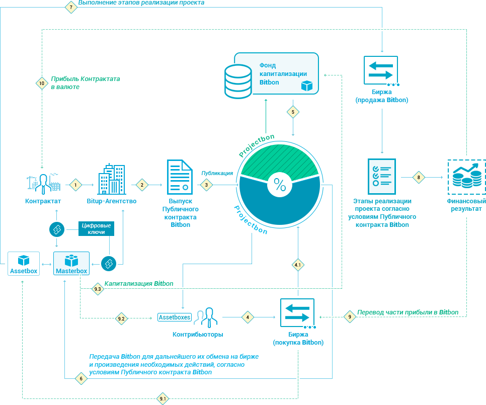

Bitbon.today
Полная схема контрибьютинга в Системе Bitbon
Опубликовано 17.03.2018
100
1100

На этом этапе произойдет первичный выпуск, согласно Положению 3 Публичного контракта Системы Bitbon, целью которого является формирование первичного рынка ликвидности, что позволит начать производить первые взаимодействия с реальным сектором экономики. Все операции с Bitbon[i] будут выполняться со ставкой комиссии, равной 0. Децентрализация сети будет повышаться за счет размещения нод Системы Bitbon на площадках доверенных партнеров и первых Bitup-Агентств на базе существующих финансовых институтов (банки, биржи, крупные брокеры и аудиторские компании.
Развитие технической инфраструктуры позволит обеспечить высокий уровень надежности за счет увеличения степени децентрализации путем увеличения количества нод Системы Bitbon до 10 000 и более. Повышение уровня публичности данных приведет к повышению рейтинга доверия к Системе и, как следствие, послужит дополнительным драйвером для распространения практик Контрибьютинга. Рост объемов Контрибьютинга приведет к повышению востребованности Bitbon и ранее выпущенных Projectbon, а следовательно, к их удорожанию.
Так же Вам могут быть интересны:
Что такое криптоценность Bitbon и какие её перспективы на фоне гигантов крипторынка
Опубликовано 17.03.2018
100
Что такое криптоценность Bitbon
Опубликовано 17.03.2018
100